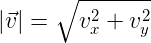
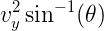
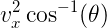
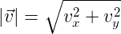
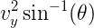
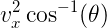

2D Kinematics
When using kinematic equations to determine two dimensional motion, you have to use them to find the x-direction variables and y-direction variables separately. True velocity,  , is the velocity tangent to the motion of the object, or in other words, the velocity you get by combining the velocity the object has in the horizontal direction with the velocity the object has in the vertical direction. These x- and y- velocities, calculated separately by the kinematic equations, are the components of the true velocity: . If you have the angle the true velocity has, it also equals  or . , is the velocity tangent to the motion of the object, or in other words, the velocity you get by combining the velocity the object has in the horizontal direction with the velocity the object has in the vertical direction. These x- and y- velocities, calculated separately by the kinematic equations, are the components of the true velocity: . If you have the angle the true velocity has, it also equals  or .
Problems involving multiple velocities are called relative velocity problems. (They often involve boats and planes.) There often is no acceleration in either the x or y directions in these problems. To find relative velocity, just subtract the velocity of the object by the velocity of the object you’re measuring relative to. Just make sure to factor in the direction of the velocities by using a negative sign when needed. Projectile motion describes an object that is thrown, or shot, in the presence of a gravity field. Thus, the acceleration of gravity is the only acceleration acting on the projectile object. Because the vertical acceleration of gravity is the only acceleration, the horizontal motion remains at a constant velocity. Also, in these problems, it is only the vertical motion that determines the time the object is in the air, not the horizontal motion. For Projectiles Launched at an Angle (as opposed to Horizontally Launched Projectiles), there are many conceptual facts that may make your life easier: ■ The true velocity at maximum height equals the horizontal component of the launch velocity. ■ Acceleration is always -10m/s² ■ The final speed of the projectile equals the launch speed (if the landing height is the same as the launch height.) ■ For a projectile landing at its initial height, the time to maximum height is half the total time of flight. ■ To reach maximum range a projectile must have a launch angle of 45 degrees. ■ Any two launch angles adding up to 90 degrees will have the same range. Just remember that all of these rules only apply in situations with no air drag, which is pretty much always the case when these problems show up. If there is air drag, it will say so in the problem. |